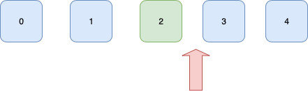
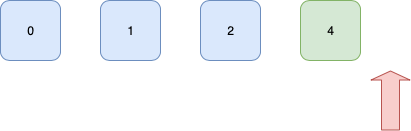

Iterators Tutorial
Welcome to my Iterators tutorial! It is an extension to my Doubly Linked List tutorial, but it is a concept that pertains to many more data structures than merely the Linked Lists such as: ArrayLists/Vectors, HashMaps, and Trees to name a few. You can find the entire Doubly linked list class with this iterator implementation here.
Iterators vs. Iterables
Iterator and Iterable are two words that are very similar that are often times confused when talking about data structures, so let’s take the time to define the difference.
An Iterator is an object that allows us to traverse a structure.
An Iterable on the other hand is a type of object or structure that implements the iterator class. So any class that has an iterator is iterable. So now that we know the difference between iterators and iterables we can delve into the nuances of Iterators. Here is the interface that is used to implement every iterator.
Interface Iterator<T> {
boolean hasNext();
T next();
Void remove();
}
The hasNext method checks to see if there is an element that succeeds the iterators position in the structure, if there is it returns true otherwise false. The next method actually moves the position of the iterator in the structure. An iterator maintains its location within a structure at all times, so when the next method is invoked it will return the next item in the structure and move the iterator past the item that is returned but before the item that follows it. The remove function removes the element that precedes the iterator. To recap the next method moves the iterator passed the element in front of the iterator pointer and returns that item, while the remove method removes the element that comes before the iterator.
Don’t be confused by our list interface:
interface List<T> extends Iterable<T> {
void add(T x);
T remove(int i);
boolean remove(T x);
T get(int i);
boolean contains(T x);
int size();
default boolean isEmpty() {
return size() == 0;
}
}
as you can see it extends iterable<T> and not iterator. An Iterable is an interface that contains Iterator<T> as a member, so by extending iterable we must implement Iterator within a class that implements the List interface, in this case it was our Doubly Linked List.
So here is the doubly linked list implementation of our iterator:
public Iterator<T< iterator() {
return new Iterator<T<() {
Node curr = head.next;
int expectedModCount = modCount;
boolean canRemove = false;
public boolean hasNext() {
return curr != head;
}
public T next() {
if (modCount != expectedModCount)
throw new ConcurrentModificationException();
T ans = curr.data;
curr = curr.next;
canRemove = true;
return ans;
}
public void remove() {
if (!canRemove)
throw new IllegalStateException();
canRemove = false;
removeHelper(curr.prev);
expectedModCount++;
}
};
}
Let’s take a piece of example code to see how to use this iterator.
DoublyLinkedList<Integer> dll = new DoublyLinkedList<>();
for(int i = 0; i < 5; i++)
dll.add(i);
Iterator<Integer> it = dll.iterator();
while(it.hasNext()) {
Integer num = it.next();
if(num.equals(3))
it.remove();
System.out.println(num);
}
So we start by populating the doubly linked list with 5 elements 0-4. Next we create an iterator object. At this point the iterator starts pointing at the structure before the first element.
Now we have arrived at the while loop of the above code and will continue iterating provided the iterator has not returned to the head of the list again. Remember our doubly linked list is circular, connecting the end to the front. So in the loop when it.next() is invoked it moves the iterator past the first element and returns the green element, printing it to the console.
We will now repeat these steps for the next 2 iterations without any change other than the value of the element to be printed to the console.

after we have return the element "3", it will match the condition where we remove an elements so the iterator<Integer>.remove() method will be invoked to remove the red element.
After the element is removed the iterator is in the same place like so:
we will iterate one more time returning the next item with the Iterator<Integer>.next() method

After this last iteration the iterator has made it all the way back to the head of the linked list. At this point it.hasNext() will return false and the example program will terminate.
Concurrent Modification Exceptions
The concurrent modification exception is integral to iterators. It is important that you implement them yourself when you’re implementing your own data structures, and important to understand them when using standard out of the box data structures.
Our data structure maintains a member variable called modCount (e.g. modification count) which counts the number of modifications that have been made to the structure. When an iterator is instantiated it maintains an internal count called the expectedModCount which is set equal to the data structure’s modCount upon instantiation of the iterator. This exception is thrown when the next method is invoked and the expectedModCount and modCount are not equal. This occurs when the structure has been modified by means other than using the iterator. The following code execution would throw a concurrent modification exception:
it.next();
dll2.remove(2);
it.next();
As you can see the remove method is called on the doubly linked list not the iterator, so the next time the next method is invoked it will throw a concurrent modification exception. It is important to throw these exceptions because it throws the exception before the structure has been corrupted.
Illegal State Exceptions
The other exception that this iterator will throw is an illegal state exception. Our Iterator<T>.remove() method may only be invoked for each time the next method is invoked. In the event that the iterator is at the start of the structure, or the remove method has already been invoked, an illegal state exception will be thrown like in the following code:
it.next();
it.remove();
it.remove();
Why do Iterators matter?
Iterators are important to understand because you are using them every-time you use a foreach loop. If appreciation is not enough of a reason for you, learn about them because it is a useful tool that can make your life easier when implementing classes and structures of your own. You can save programmers a great deal of time writing code in a code base if you provide them with these tools. Additionally, other programmers will often provide you with iterators and iterable classes in their code, and you will become a more efficient and productive programmer by taking advantage of the tools they have provided you.